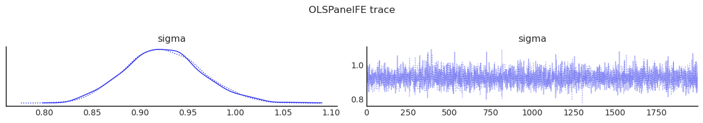
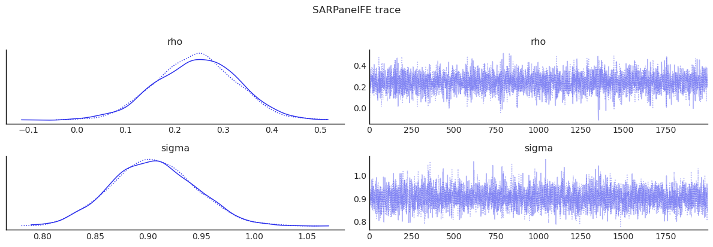
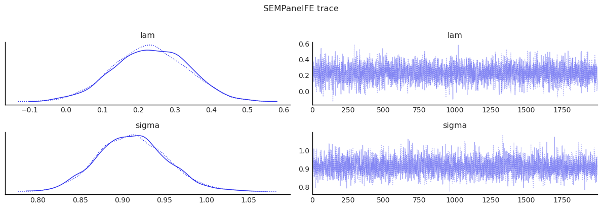
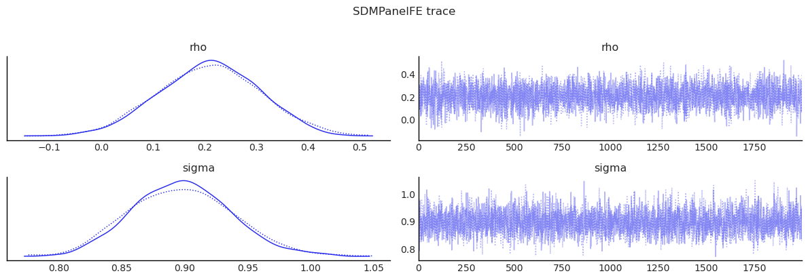
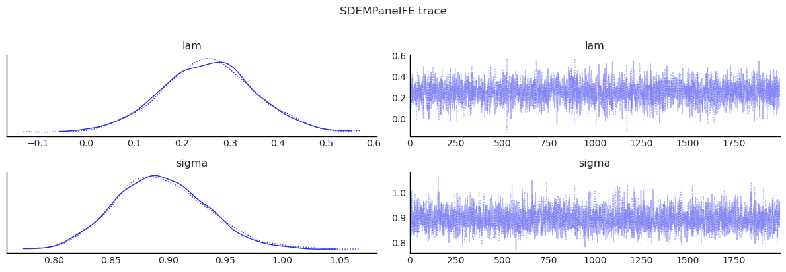
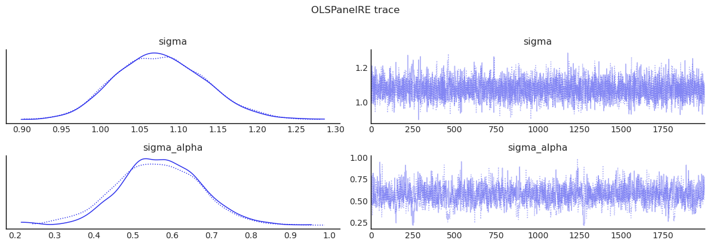
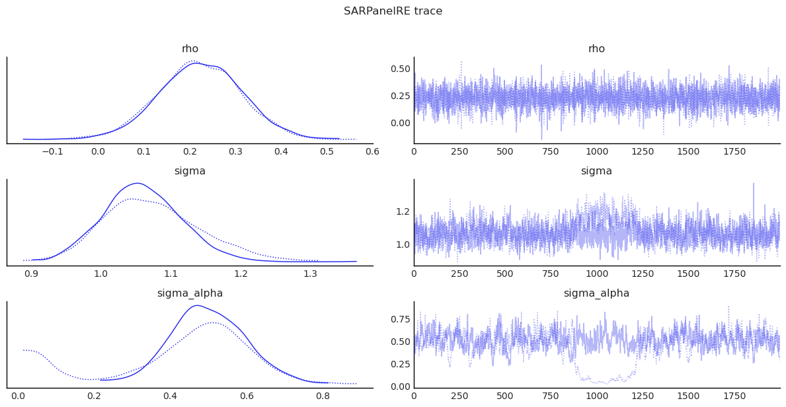
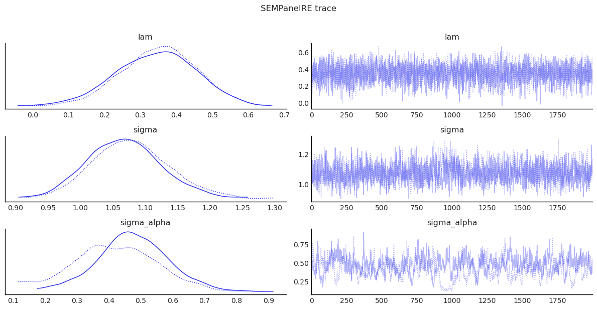
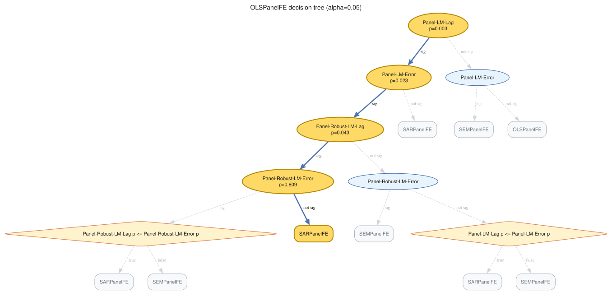
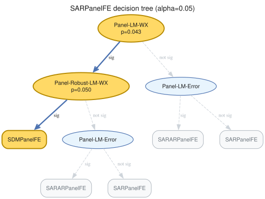

Bayesian Spatial Panel Models¶
This notebook demonstrates the panel-model classes in bayespecon:
Fixed effects / pooled panel models:
OLSPanelFE,SARPanelFE,SEMPanelFE,SDMPanelFE,SDEMPanelFERandom effects panel models:
OLSPanelRE,SARPanelRE,SEMPanelRE
It also demonstrates Bayesian model comparison via WAIC, LOO-CV, and Bayes factors.
Panel Model Equations¶
Let observations be stacked by time, then unit (panel_g convention).
Fixed-effects / pooled classes:
OLS panel: \(y_{it} = x_{it}'\beta + a_i + \tau_t + \epsilon_{it}\)
SAR panel: \(y_{it} = \rho (Wy)_{it} + x_{it}'\beta + a_i + \tau_t + \epsilon_{it}\)
SEM panel: \(y_{it} = x_{it}'\beta + a_i + \tau_t + u_{it},\; u_{it}=\lambda (Wu)_{it}+\epsilon_{it}\)
SDM panel: \(y_{it} = \rho (Wy)_{it} + x_{it}'\beta + (Wx)_{it}'\theta + a_i + \tau_t + \epsilon_{it}\)
SDEM panel: \(y_{it} = x_{it}'\beta + (Wx)_{it}'\theta + a_i + \tau_t + u_{it},\; u_{it}=\lambda (Wu)_{it}+\epsilon_{it}\)
Random-effects classes:
OLS random effects: \(y_{it} = x_{it}'\beta + \alpha_i + \epsilon_{it},\; \alpha_i \sim N(0, \sigma_\alpha^2)\)
SAR random effects: \(y_{it} = \rho (Wy)_{it} + x_{it}'\beta + \alpha_i + \epsilon_{it},\; \alpha_i \sim N(0, \sigma_\alpha^2)\)
SEM random effects: \(y_{it} = x_{it}'\beta + \alpha_i + u_{it},\; u_{it}=\lambda (Wu)_{it}+\epsilon_{it},\; \alpha_i \sim N(0, \sigma_\alpha^2)\)
The model argument selects the pooled or fixed-effects specification for the FE classes:
0pooled1unit FE2time FE3two-way FE
The RE classes are hierarchical models with unit-level random intercepts, so they internally use the pooled design and estimate sigma_alpha directly.
import arviz as az
import matplotlib.pyplot as plt
import numpy as np
import pandas as pd
from libpysal.graph import Graph
from bayespecon import (
OLSPanelFE,
OLSPanelRE,
SARPanelFE,
SARPanelRE,
SDEMPanelFE,
SDMPanelFE,
SEMPanelFE,
SEMPanelRE,
dgp,
)
az.style.use("arviz-white")
Build a Balanced Panel Dataset¶
For pedagogy, we generate synthetic panel data from the bayespecon.dgp module on a regular polygon grid and then assemble a formula-ready DataFrame.
# Generate base geometry via cross-sectional DGP, then simulate panel data via panel DGP.
rng = np.random.default_rng(2026)
xcols = ["poverty", "rev_rating", "num_spots", "crowded"]
ycol = "price_pp"
base_gdf = dgp.simulate_sar(n=8, seed=2026, create_gdf=True, geometry_type="polygon")
W = Graph.build_contiguity(base_gdf, rook=False).transform("r")
N = len(base_gdf)
T = 4
beta = np.array([1.5, -0.8, 0.6, 0.4, -0.5], dtype=float)
panel_sim = dgp.simulate_panel_sar_fe(
N=N,
T=T,
rho=0.35,
beta=beta,
sigma=1.0,
sigma_alpha=0.5,
rng=rng,
W=W,
)
panel = pd.DataFrame(
{
"unit": panel_sim["unit"],
"time": panel_sim["time"],
ycol: panel_sim["y"],
}
)
for j, name in enumerate(xcols, start=1):
panel[name] = panel_sim["X"][:, j]
Shared Helpers¶
def fit_panel_model(
model_cls, formula, data, W, model=3, draws=2000, tune=1000, chains=2, seed=42
):
"""Fit a panel model and return (model, summary, effects_df).
Uses minimal MCMC settings for pedagogical demonstration.
Increase draws/tune for real analyses.
"""
m = model_cls(
formula=formula,
data=data,
W=W,
unit_col="unit",
time_col="time",
model=model,
logdet_method="eigenvalue",
)
m.fit(
sampler="gibbs",
draws=draws,
tune=tune,
chains=chains,
target_accept=0.9,
random_seed=seed,
progressbar=False,
idata_kwargs={"log_likelihood": True},
)
summary = m.summary(round_to=3)
effects_df = pd.DataFrame(m.spatial_effects())
return m, summary, effects_df
def diagnostics_table(idata, var_names):
"""Show key MCMC diagnostics for the given parameters."""
cols = ["mean", "sd", "ess_bulk", "ess_tail", "r_hat"]
return az.summary(idata, var_names=var_names, round_to=3)[cols]
def show_trace(idata, var_names, title):
"""Plot trace plots for the given parameters."""
az.plot_trace(idata, var_names=var_names)
plt.suptitle(title, y=1.02)
plt.tight_layout()
plt.show()
Fit: OLSPanelFE¶
formula = "price_pp ~ poverty + rev_rating + num_spots + crowded"
ols_panel, summary_ols, effects_ols = fit_panel_model(
OLSPanelFE, formula, panel, W, model=3
)
display(summary_ols)
display(effects_ols)
display(diagnostics_table(ols_panel.inference_data, ["beta", "sigma"]))
show_trace(ols_panel.inference_data, ["sigma"], "OLSPanelFE trace")
Initializing NUTS using jitter+adapt_diag...
Multiprocess sampling (2 chains in 2 jobs)
NUTS: [beta, sigma2]
Sampling 2 chains for 1_000 tune and 2_000 draw iterations (2_000 + 4_000 draws total) took 6 seconds.
We recommend running at least 4 chains for robust computation of convergence diagnostics
/tmp/ipykernel_7192/633268237.py:43: UserWarning: The figure layout has changed to tight
plt.tight_layout()
| mean | sd | hdi_3% | hdi_97% | mcse_mean | mcse_sd | ess_bulk | ess_tail | r_hat | |
|---|---|---|---|---|---|---|---|---|---|
| poverty | -0.778 | 0.064 | -0.899 | -0.658 | 0.001 | 0.001 | 5248.631 | 2885.703 | 1.000 |
| rev_rating | 0.622 | 0.069 | 0.499 | 0.760 | 0.001 | 0.001 | 4830.845 | 2916.331 | 1.001 |
| num_spots | 0.393 | 0.077 | 0.249 | 0.539 | 0.001 | 0.001 | 3881.400 | 2954.851 | 1.001 |
| crowded | -0.483 | 0.063 | -0.598 | -0.360 | 0.001 | 0.001 | 4476.219 | 3484.310 | 1.001 |
| sigma2 | 0.857 | 0.076 | 0.714 | 0.998 | 0.001 | 0.001 | 4258.377 | 3012.404 | 1.000 |
| sigma | 0.925 | 0.041 | 0.847 | 1.001 | 0.001 | 0.001 | 4258.377 | 3012.404 | 1.000 |
| direct | direct_ci_lower | direct_ci_upper | direct_pvalue | indirect | indirect_ci_lower | indirect_ci_upper | indirect_pvalue | total | total_ci_lower | total_ci_upper | total_pvalue | |
|---|---|---|---|---|---|---|---|---|---|---|---|---|
| variable | ||||||||||||
| poverty | -0.778197 | -0.901122 | -0.650449 | 0.0 | 0.0 | 0.0 | 0.0 | 0.0 | -0.778197 | -0.901122 | -0.650449 | 0.0 |
| rev_rating | 0.621929 | 0.486612 | 0.759197 | 0.0 | 0.0 | 0.0 | 0.0 | 0.0 | 0.621929 | 0.486612 | 0.759197 | 0.0 |
| num_spots | 0.393290 | 0.239018 | 0.542487 | 0.0 | 0.0 | 0.0 | 0.0 | 0.0 | 0.393290 | 0.239018 | 0.542487 | 0.0 |
| crowded | -0.482595 | -0.607448 | -0.357812 | 0.0 | 0.0 | 0.0 | 0.0 | 0.0 | -0.482595 | -0.607448 | -0.357812 | 0.0 |
| mean | sd | ess_bulk | ess_tail | r_hat | |
|---|---|---|---|---|---|
| beta[poverty] | -0.778 | 0.064 | 5248.631 | 2885.703 | 1.000 |
| beta[rev_rating] | 0.622 | 0.069 | 4830.845 | 2916.331 | 1.001 |
| beta[num_spots] | 0.393 | 0.077 | 3881.400 | 2954.851 | 1.001 |
| beta[crowded] | -0.483 | 0.063 | 4476.219 | 3484.310 | 1.001 |
| sigma | 0.925 | 0.041 | 4258.377 | 3012.404 | 1.000 |

Fit: SARPanelFE¶
sar_panel, summary_sar, effects_sar = fit_panel_model(
SARPanelFE, formula, panel, W, model=3
)
display(summary_sar)
display(effects_sar)
display(diagnostics_table(sar_panel.inference_data, ["rho", "beta", "sigma"]))
show_trace(sar_panel.inference_data, ["rho", "sigma"], "SARPanelFE trace")
| mean | sd | hdi_3% | hdi_97% | mcse_mean | mcse_sd | ess_bulk | ess_tail | r_hat | |
|---|---|---|---|---|---|---|---|---|---|
| rho | 0.245 | 0.084 | 0.090 | 0.400 | 0.001 | 0.001 | 3687.192 | 2777.406 | 1.000 |
| sigma | 0.905 | 0.040 | 0.827 | 0.975 | 0.001 | 0.000 | 3779.120 | 3852.042 | 1.001 |
| sigma2 | 0.821 | 0.073 | 0.685 | 0.950 | 0.001 | 0.001 | 3779.120 | 3852.042 | 1.001 |
| poverty | -0.783 | 0.063 | -0.903 | -0.669 | 0.001 | 0.001 | 3823.828 | 4003.518 | 1.001 |
| rev_rating | 0.623 | 0.067 | 0.493 | 0.746 | 0.001 | 0.001 | 3857.599 | 4021.112 | 1.001 |
| num_spots | 0.375 | 0.076 | 0.239 | 0.518 | 0.001 | 0.001 | 4175.332 | 3965.176 | 1.000 |
| crowded | -0.495 | 0.062 | -0.609 | -0.378 | 0.001 | 0.001 | 4049.002 | 3806.012 | 1.000 |
| direct | direct_ci_lower | direct_ci_upper | direct_pvalue | indirect | indirect_ci_lower | indirect_ci_upper | indirect_pvalue | total | total_ci_lower | total_ci_upper | total_pvalue | |
|---|---|---|---|---|---|---|---|---|---|---|---|---|
| variable | ||||||||||||
| poverty | -0.792646 | -0.919368 | -0.669683 | 0.0 | -0.257469 | -0.515313 | -0.067020 | 0.0055 | -1.050115 | -1.364243 | -0.803083 | 0.0 |
| rev_rating | 0.630611 | 0.499610 | 0.765076 | 0.0 | 0.204880 | 0.052147 | 0.415147 | 0.0055 | 0.835491 | 0.606520 | 1.114816 | 0.0 |
| num_spots | 0.379643 | 0.236840 | 0.530846 | 0.0 | 0.123564 | 0.028777 | 0.263642 | 0.0055 | 0.503208 | 0.291953 | 0.756972 | 0.0 |
| crowded | -0.500788 | -0.625641 | -0.376443 | 0.0 | -0.162840 | -0.333868 | -0.039782 | 0.0055 | -0.663627 | -0.912050 | -0.459484 | 0.0 |
| mean | sd | ess_bulk | ess_tail | r_hat | |
|---|---|---|---|---|---|
| rho | 0.245 | 0.084 | 3687.192 | 2777.406 | 1.000 |
| beta[poverty] | -0.783 | 0.063 | 3823.828 | 4003.518 | 1.001 |
| beta[rev_rating] | 0.623 | 0.067 | 3857.599 | 4021.112 | 1.001 |
| beta[num_spots] | 0.375 | 0.076 | 4175.332 | 3965.176 | 1.000 |
| beta[crowded] | -0.495 | 0.062 | 4049.002 | 3806.012 | 1.000 |
| sigma | 0.905 | 0.040 | 3779.120 | 3852.042 | 1.001 |
/tmp/ipykernel_7192/633268237.py:43: UserWarning: The figure layout has changed to tight
plt.tight_layout()

Fit: SEMPanelFE¶
sem_panel, summary_sem, effects_sem = fit_panel_model(
SEMPanelFE, formula, panel, W, model=3
)
display(summary_sem)
display(effects_sem)
display(diagnostics_table(sem_panel.inference_data, ["lam", "beta", "sigma"]))
show_trace(sem_panel.inference_data, ["lam", "sigma"], "SEMPanelFE trace")
| mean | sd | hdi_3% | hdi_97% | mcse_mean | mcse_sd | ess_bulk | ess_tail | r_hat | |
|---|---|---|---|---|---|---|---|---|---|
| lam | 0.232 | 0.102 | 0.046 | 0.423 | 0.002 | 0.002 | 4031.895 | 2820.877 | 1.001 |
| sigma | 0.912 | 0.041 | 0.836 | 0.989 | 0.001 | 0.000 | 4004.962 | 4092.606 | 1.000 |
| sigma2 | 0.834 | 0.075 | 0.695 | 0.973 | 0.001 | 0.001 | 4004.962 | 4092.606 | 1.000 |
| poverty | -0.775 | 0.062 | -0.893 | -0.662 | 0.001 | 0.001 | 3877.921 | 3649.460 | 1.000 |
| rev_rating | 0.602 | 0.066 | 0.473 | 0.723 | 0.001 | 0.001 | 4147.397 | 4005.728 | 1.000 |
| num_spots | 0.363 | 0.077 | 0.223 | 0.511 | 0.001 | 0.001 | 3977.707 | 3922.719 | 1.000 |
| crowded | -0.493 | 0.061 | -0.598 | -0.370 | 0.001 | 0.001 | 3957.005 | 3612.751 | 1.000 |
| direct | direct_ci_lower | direct_ci_upper | direct_pvalue | indirect | indirect_ci_lower | indirect_ci_upper | indirect_pvalue | total | total_ci_lower | total_ci_upper | total_pvalue | |
|---|---|---|---|---|---|---|---|---|---|---|---|---|
| variable | ||||||||||||
| poverty | -0.775499 | -0.895622 | -0.654994 | 0.0 | 0.0 | 0.0 | 0.0 | 0.0 | -0.775499 | -0.895622 | -0.654994 | 0.0 |
| rev_rating | 0.601759 | 0.473643 | 0.733580 | 0.0 | 0.0 | 0.0 | 0.0 | 0.0 | 0.601759 | 0.473643 | 0.733580 | 0.0 |
| num_spots | 0.362947 | 0.214015 | 0.516076 | 0.0 | 0.0 | 0.0 | 0.0 | 0.0 | 0.362947 | 0.214015 | 0.516076 | 0.0 |
| crowded | -0.492602 | -0.609286 | -0.371015 | 0.0 | 0.0 | 0.0 | 0.0 | 0.0 | -0.492602 | -0.609286 | -0.371015 | 0.0 |
| mean | sd | ess_bulk | ess_tail | r_hat | |
|---|---|---|---|---|---|
| lam | 0.232 | 0.102 | 4031.895 | 2820.877 | 1.001 |
| beta[poverty] | -0.775 | 0.062 | 3877.921 | 3649.460 | 1.000 |
| beta[rev_rating] | 0.602 | 0.066 | 4147.397 | 4005.728 | 1.000 |
| beta[num_spots] | 0.363 | 0.077 | 3977.707 | 3922.719 | 1.000 |
| beta[crowded] | -0.493 | 0.061 | 3957.005 | 3612.751 | 1.000 |
| sigma | 0.912 | 0.041 | 4004.962 | 4092.606 | 1.000 |
/tmp/ipykernel_7192/633268237.py:43: UserWarning: The figure layout has changed to tight
plt.tight_layout()

Fit: SDMPanelFE¶
sdm_panel, summary_sdm, effects_sdm = fit_panel_model(
SDMPanelFE, formula, panel, W, model=3
)
display(summary_sdm)
display(effects_sdm)
display(diagnostics_table(sdm_panel.inference_data, ["rho", "beta", "sigma"]))
show_trace(sdm_panel.inference_data, ["rho", "sigma"], "SDMPanelFE trace")
| mean | sd | hdi_3% | hdi_97% | mcse_mean | mcse_sd | ess_bulk | ess_tail | r_hat | |
|---|---|---|---|---|---|---|---|---|---|
| rho | 0.209 | 0.099 | 0.025 | 0.390 | 0.002 | 0.002 | 3848.606 | 3069.449 | 1.000 |
| sigma | 0.898 | 0.040 | 0.822 | 0.972 | 0.001 | 0.000 | 3519.986 | 3845.246 | 1.002 |
| sigma2 | 0.808 | 0.073 | 0.672 | 0.940 | 0.001 | 0.001 | 3519.986 | 3845.246 | 1.002 |
| poverty | -0.776 | 0.062 | -0.891 | -0.660 | 0.001 | 0.001 | 4020.028 | 3925.092 | 1.001 |
| rev_rating | 0.648 | 0.070 | 0.519 | 0.785 | 0.001 | 0.001 | 4054.822 | 3981.961 | 1.000 |
| num_spots | 0.365 | 0.074 | 0.227 | 0.504 | 0.001 | 0.001 | 4254.302 | 3718.211 | 1.000 |
| crowded | -0.487 | 0.061 | -0.593 | -0.363 | 0.001 | 0.001 | 4062.529 | 3966.000 | 1.000 |
| W*poverty | 0.044 | 0.174 | -0.294 | 0.357 | 0.003 | 0.002 | 3900.769 | 3845.500 | 1.000 |
| W*rev_rating | 0.259 | 0.203 | -0.133 | 0.628 | 0.003 | 0.002 | 3886.371 | 3756.442 | 1.000 |
| W*num_spots | 0.428 | 0.200 | 0.084 | 0.824 | 0.003 | 0.002 | 3576.376 | 4031.496 | 1.000 |
| W*crowded | 0.218 | 0.177 | -0.121 | 0.538 | 0.003 | 0.002 | 3925.934 | 3677.905 | 1.000 |
| direct | direct_ci_lower | direct_ci_upper | direct_pvalue | indirect | indirect_ci_lower | indirect_ci_upper | indirect_pvalue | total | total_ci_lower | total_ci_upper | total_pvalue | |
|---|---|---|---|---|---|---|---|---|---|---|---|---|
| variable | ||||||||||||
| poverty | -0.781576 | -0.905630 | -0.654470 | 0.0 | -0.158985 | -0.694174 | 0.287338 | 0.5230 | -0.940561 | -1.526619 | -0.449112 | 0.0000 |
| rev_rating | 0.663563 | 0.516931 | 0.813039 | 0.0 | 0.501365 | -0.049988 | 1.124342 | 0.0700 | 1.164928 | 0.545668 | 1.883076 | 0.0000 |
| num_spots | 0.384233 | 0.233626 | 0.533180 | 0.0 | 0.633348 | 0.135242 | 1.220529 | 0.0080 | 1.017580 | 0.469009 | 1.667680 | 0.0000 |
| crowded | -0.483667 | -0.606408 | -0.357866 | 0.0 | 0.137437 | -0.327845 | 0.576161 | 0.5425 | -0.346230 | -0.867562 | 0.137930 | 0.1695 |
| mean | sd | ess_bulk | ess_tail | r_hat | |
|---|---|---|---|---|---|
| rho | 0.209 | 0.099 | 3848.606 | 3069.449 | 1.000 |
| beta[poverty] | -0.776 | 0.062 | 4020.028 | 3925.092 | 1.001 |
| beta[rev_rating] | 0.648 | 0.070 | 4054.822 | 3981.961 | 1.000 |
| beta[num_spots] | 0.365 | 0.074 | 4254.302 | 3718.211 | 1.000 |
| beta[crowded] | -0.487 | 0.061 | 4062.529 | 3966.000 | 1.000 |
| beta[W*poverty] | 0.044 | 0.174 | 3900.769 | 3845.500 | 1.000 |
| beta[W*rev_rating] | 0.259 | 0.203 | 3886.371 | 3756.442 | 1.000 |
| beta[W*num_spots] | 0.428 | 0.200 | 3576.376 | 4031.496 | 1.000 |
| beta[W*crowded] | 0.218 | 0.177 | 3925.934 | 3677.905 | 1.000 |
| sigma | 0.898 | 0.040 | 3519.986 | 3845.246 | 1.002 |
/tmp/ipykernel_7192/633268237.py:43: UserWarning: The figure layout has changed to tight
plt.tight_layout()

Fit: SDEMPanelFE¶
sdem_panel, summary_sdem, effects_sdem = fit_panel_model(
SDEMPanelFE, formula, panel, W, model=3
)
display(summary_sdem)
display(effects_sdem)
display(diagnostics_table(sdem_panel.inference_data, ["lam", "beta", "sigma"]))
show_trace(sdem_panel.inference_data, ["lam", "sigma"], "SDEMPanelFE trace")
| mean | sd | hdi_3% | hdi_97% | mcse_mean | mcse_sd | ess_bulk | ess_tail | r_hat | |
|---|---|---|---|---|---|---|---|---|---|
| lam | 0.254 | 0.097 | 0.069 | 0.435 | 0.002 | 0.002 | 3895.742 | 2542.515 | 1.000 |
| sigma | 0.894 | 0.040 | 0.820 | 0.967 | 0.001 | 0.000 | 3311.364 | 3829.443 | 1.001 |
| sigma2 | 0.802 | 0.072 | 0.672 | 0.935 | 0.001 | 0.001 | 3311.364 | 3829.443 | 1.001 |
| poverty | -0.780 | 0.064 | -0.898 | -0.658 | 0.001 | 0.001 | 3898.329 | 3964.435 | 1.000 |
| rev_rating | 0.659 | 0.072 | 0.534 | 0.804 | 0.001 | 0.001 | 3995.890 | 4006.896 | 1.000 |
| num_spots | 0.385 | 0.077 | 0.241 | 0.526 | 0.001 | 0.001 | 4249.515 | 4058.775 | 1.000 |
| crowded | -0.487 | 0.065 | -0.603 | -0.358 | 0.001 | 0.001 | 3592.274 | 3622.008 | 1.000 |
| W*poverty | -0.154 | 0.180 | -0.499 | 0.174 | 0.003 | 0.002 | 4058.969 | 3813.438 | 1.000 |
| W*rev_rating | 0.437 | 0.208 | 0.055 | 0.823 | 0.003 | 0.002 | 4259.877 | 4138.953 | 1.000 |
| W*num_spots | 0.604 | 0.214 | 0.198 | 1.001 | 0.003 | 0.002 | 4040.326 | 4047.362 | 1.000 |
| W*crowded | 0.118 | 0.194 | -0.233 | 0.496 | 0.003 | 0.002 | 3964.016 | 3881.062 | 1.000 |
| direct | direct_ci_lower | direct_ci_upper | direct_pvalue | indirect | indirect_ci_lower | indirect_ci_upper | indirect_pvalue | total | total_ci_lower | total_ci_upper | total_pvalue | |
|---|---|---|---|---|---|---|---|---|---|---|---|---|
| variable | ||||||||||||
| poverty | -0.780036 | -0.902883 | -0.654584 | 0.0 | -0.154455 | -0.504570 | 0.198059 | 0.3810 | -0.934491 | -1.332634 | -0.527697 | 0.000 |
| rev_rating | 0.659395 | 0.520437 | 0.802779 | 0.0 | 0.436789 | 0.036824 | 0.845066 | 0.0330 | 1.096184 | 0.613875 | 1.583165 | 0.000 |
| num_spots | 0.384740 | 0.236479 | 0.534391 | 0.0 | 0.604237 | 0.185420 | 1.025029 | 0.0045 | 0.988977 | 0.505418 | 1.473549 | 0.000 |
| crowded | -0.486857 | -0.616768 | -0.357915 | 0.0 | 0.118443 | -0.267916 | 0.495726 | 0.5360 | -0.368413 | -0.812735 | 0.071722 | 0.099 |
| mean | sd | ess_bulk | ess_tail | r_hat | |
|---|---|---|---|---|---|
| lam | 0.254 | 0.097 | 3895.742 | 2542.515 | 1.000 |
| beta[poverty] | -0.780 | 0.064 | 3898.329 | 3964.435 | 1.000 |
| beta[rev_rating] | 0.659 | 0.072 | 3995.890 | 4006.896 | 1.000 |
| beta[num_spots] | 0.385 | 0.077 | 4249.515 | 4058.775 | 1.000 |
| beta[crowded] | -0.487 | 0.065 | 3592.274 | 3622.008 | 1.000 |
| beta[W*poverty] | -0.154 | 0.180 | 4058.969 | 3813.438 | 1.000 |
| beta[W*rev_rating] | 0.437 | 0.208 | 4259.877 | 4138.953 | 1.000 |
| beta[W*num_spots] | 0.604 | 0.214 | 4040.326 | 4047.362 | 1.000 |
| beta[W*crowded] | 0.118 | 0.194 | 3964.016 | 3881.062 | 1.000 |
| sigma | 0.894 | 0.040 | 3311.364 | 3829.443 | 1.001 |
/tmp/ipykernel_7192/633268237.py:43: UserWarning: The figure layout has changed to tight
plt.tight_layout()

MCMC adequacy for the spatial parameter¶
Panel SAR/SDEM models inherit the slow-mixing behaviour of \(\rho\)
(or \(\lambda\)) documented by Wolf, Anselin & Arribas-Bel (2018)
[Wolf et al., 2018]. The
spatial_mcmc_diagnostic helper checks ESS, sampler yield, \(\hat{R}\),
and HPDI stability for the spatial scalar.
from bayespecon import spatial_mcmc_diagnostic
spatial_mcmc_diagnostic(sdm_panel, emit_warnings=False).to_frame()
| ess_bulk | ess_tail | r_hat | mcse_mean | yield_pct | hpdi_drift_pct | adequate | |
|---|---|---|---|---|---|---|---|
| parameter | |||||||
| rho | 3848.606425 | 3069.449158 | 1.000468 | 0.001587 | 96.215161 | 2.197879 | True |
Random-Effects Panel Models¶
The random-effects models replace deterministic unit fixed effects with latent unit intercepts \(\alpha_i \sim N(0, \sigma_\alpha^2)\). That lets the notebook estimate the variance of unit heterogeneity directly and compare FE and RE behavior on the same synthetic balanced panel.
Fit: OLSPanelRE¶
ols_panel_re, summary_ols_re, effects_ols_re = fit_panel_model(
OLSPanelRE, formula, panel, W, model=0
)
display(summary_ols_re)
display(effects_ols_re)
display(
diagnostics_table(ols_panel_re.inference_data, ["beta", "sigma", "sigma_alpha"])
)
show_trace(ols_panel_re.inference_data, ["sigma", "sigma_alpha"], "OLSPanelRE trace")
Initializing NUTS using jitter+adapt_diag...
Multiprocess sampling (2 chains in 2 jobs)
NUTS: [beta, sigma, sigma_alpha, alpha]
Sampling 2 chains for 1_000 tune and 2_000 draw iterations (2_000 + 4_000 draws total) took 7 seconds.
We recommend running at least 4 chains for robust computation of convergence diagnostics
/tmp/ipykernel_7192/633268237.py:43: UserWarning: The figure layout has changed to tight
plt.tight_layout()
| mean | sd | hdi_3% | hdi_97% | mcse_mean | mcse_sd | ess_bulk | ess_tail | r_hat | |
|---|---|---|---|---|---|---|---|---|---|
| Intercept | 2.314 | 0.100 | 2.126 | 2.498 | 0.002 | 0.001 | 3717.813 | 3399.753 | 1.000 |
| poverty | -0.821 | 0.068 | -0.947 | -0.695 | 0.001 | 0.001 | 6251.432 | 3274.965 | 1.002 |
| rev_rating | 0.640 | 0.076 | 0.494 | 0.779 | 0.001 | 0.001 | 7237.462 | 2677.725 | 1.000 |
| num_spots | 0.422 | 0.082 | 0.254 | 0.566 | 0.001 | 0.001 | 7551.878 | 3365.161 | 1.000 |
| crowded | -0.467 | 0.067 | -0.587 | -0.337 | 0.001 | 0.001 | 6810.594 | 3343.965 | 1.000 |
| ... | ... | ... | ... | ... | ... | ... | ... | ... | ... |
| alpha[61] | -0.405 | 0.409 | -1.196 | 0.307 | 0.005 | 0.007 | 6699.304 | 3006.968 | 1.001 |
| alpha[62] | -0.483 | 0.407 | -1.289 | 0.260 | 0.005 | 0.007 | 5467.320 | 3002.908 | 1.000 |
| alpha[63] | -0.076 | 0.397 | -0.864 | 0.661 | 0.004 | 0.008 | 9406.947 | 2257.884 | 1.000 |
| sigma | 1.077 | 0.057 | 0.978 | 1.188 | 0.001 | 0.001 | 3962.966 | 2528.102 | 1.000 |
| sigma_alpha | 0.567 | 0.106 | 0.377 | 0.776 | 0.003 | 0.003 | 958.962 | 629.785 | 1.002 |
71 rows × 9 columns
| direct | direct_ci_lower | direct_ci_upper | direct_pvalue | indirect | indirect_ci_lower | indirect_ci_upper | indirect_pvalue | total | total_ci_lower | total_ci_upper | total_pvalue | |
|---|---|---|---|---|---|---|---|---|---|---|---|---|
| variable | ||||||||||||
| poverty | -0.820669 | -0.953794 | -0.690021 | 0.0 | 0.0 | 0.0 | 0.0 | 0.0 | -0.820669 | -0.953794 | -0.690021 | 0.0 |
| rev_rating | 0.639674 | 0.488910 | 0.789296 | 0.0 | 0.0 | 0.0 | 0.0 | 0.0 | 0.639674 | 0.488910 | 0.789296 | 0.0 |
| num_spots | 0.422403 | 0.257929 | 0.587722 | 0.0 | 0.0 | 0.0 | 0.0 | 0.0 | 0.422403 | 0.257929 | 0.587722 | 0.0 |
| crowded | -0.467127 | -0.599161 | -0.335764 | 0.0 | 0.0 | 0.0 | 0.0 | 0.0 | -0.467127 | -0.599161 | -0.335764 | 0.0 |
| mean | sd | ess_bulk | ess_tail | r_hat | |
|---|---|---|---|---|---|
| beta[Intercept] | 2.314 | 0.100 | 3717.813 | 3399.753 | 1.000 |
| beta[poverty] | -0.821 | 0.068 | 6251.432 | 3274.965 | 1.002 |
| beta[rev_rating] | 0.640 | 0.076 | 7237.462 | 2677.725 | 1.000 |
| beta[num_spots] | 0.422 | 0.082 | 7551.878 | 3365.161 | 1.000 |
| beta[crowded] | -0.467 | 0.067 | 6810.594 | 3343.965 | 1.000 |
| sigma | 1.077 | 0.057 | 3962.966 | 2528.102 | 1.000 |
| sigma_alpha | 0.567 | 0.106 | 958.962 | 629.785 | 1.002 |

Fit: SARPanelRE¶
sar_panel_re, summary_sar_re, effects_sar_re = fit_panel_model(
SARPanelRE, formula, panel, W, model=0
)
display(summary_sar_re)
display(effects_sar_re)
display(
diagnostics_table(
sar_panel_re.inference_data, ["rho", "beta", "sigma", "sigma_alpha"]
)
)
show_trace(
sar_panel_re.inference_data, ["rho", "sigma", "sigma_alpha"], "SARPanelRE trace"
)
| mean | sd | hdi_3% | hdi_97% | mcse_mean | mcse_sd | ess_bulk | ess_tail | r_hat | |
|---|---|---|---|---|---|---|---|---|---|
| rho | 0.222 | 0.090 | 0.057 | 0.395 | 0.001 | 0.001 | 3813.244 | 2892.072 | 1.000 |
| sigma | 1.067 | 0.063 | 0.952 | 1.189 | 0.007 | 0.004 | 101.011 | 104.788 | 1.012 |
| sigma_alpha | 0.462 | 0.154 | 0.031 | 0.666 | 0.030 | 0.034 | 51.918 | 24.668 | 1.031 |
| Intercept | 1.774 | 0.239 | 1.339 | 2.220 | 0.004 | 0.004 | 3070.499 | 3026.669 | 1.000 |
| poverty | -0.826 | 0.066 | -0.949 | -0.699 | 0.001 | 0.001 | 2734.568 | 3320.497 | 1.002 |
| ... | ... | ... | ... | ... | ... | ... | ... | ... | ... |
| alpha[59] | 0.036 | 0.354 | -0.603 | 0.749 | 0.006 | 0.008 | 3765.321 | 3622.226 | 1.010 |
| alpha[60] | -0.399 | 0.375 | -1.114 | 0.230 | 0.024 | 0.004 | 268.748 | 3113.312 | 1.006 |
| alpha[61] | -0.305 | 0.359 | -1.000 | 0.330 | 0.017 | 0.004 | 412.172 | 3114.429 | 1.006 |
| alpha[62] | -0.415 | 0.387 | -1.190 | 0.211 | 0.025 | 0.005 | 230.601 | 2889.727 | 1.007 |
| alpha[63] | -0.050 | 0.352 | -0.689 | 0.647 | 0.006 | 0.007 | 3307.258 | 2676.705 | 1.012 |
72 rows × 9 columns
| direct | direct_ci_lower | direct_ci_upper | direct_pvalue | indirect | indirect_ci_lower | indirect_ci_upper | indirect_pvalue | total | total_ci_lower | total_ci_upper | total_pvalue | |
|---|---|---|---|---|---|---|---|---|---|---|---|---|
| variable | ||||||||||||
| poverty | -0.834916 | -0.968104 | -0.704820 | 0.0 | -0.242603 | -0.524416 | -0.038419 | 0.019 | -1.077519 | -1.422963 | -0.813984 | 0.0 |
| rev_rating | 0.648935 | 0.506586 | 0.793081 | 0.0 | 0.188560 | 0.028904 | 0.411327 | 0.019 | 0.837495 | 0.598662 | 1.128734 | 0.0 |
| num_spots | 0.405782 | 0.242202 | 0.570676 | 0.0 | 0.117965 | 0.016054 | 0.272633 | 0.019 | 0.523747 | 0.298445 | 0.786797 | 0.0 |
| crowded | -0.474416 | -0.601488 | -0.340651 | 0.0 | -0.137789 | -0.303869 | -0.020811 | 0.019 | -0.612205 | -0.851494 | -0.411731 | 0.0 |
| mean | sd | ess_bulk | ess_tail | r_hat | |
|---|---|---|---|---|---|
| rho | 0.222 | 0.090 | 3813.244 | 2892.072 | 1.000 |
| beta[Intercept] | 1.774 | 0.239 | 3070.499 | 3026.669 | 1.000 |
| beta[poverty] | -0.826 | 0.066 | 2734.568 | 3320.497 | 1.002 |
| beta[rev_rating] | 0.642 | 0.072 | 3263.508 | 3548.819 | 1.001 |
| beta[num_spots] | 0.402 | 0.083 | 3102.868 | 3528.812 | 1.001 |
| beta[crowded] | -0.469 | 0.067 | 3389.166 | 3678.590 | 1.001 |
| sigma | 1.067 | 0.063 | 101.011 | 104.788 | 1.012 |
| sigma_alpha | 0.462 | 0.154 | 51.918 | 24.668 | 1.031 |
/tmp/ipykernel_7192/633268237.py:43: UserWarning: The figure layout has changed to tight
plt.tight_layout()

Fit: SEMPanelRE¶
sem_panel_re, summary_sem_re, effects_sem_re = fit_panel_model(
SEMPanelRE, formula, panel, W, model=0
)
display(summary_sem_re)
display(effects_sem_re)
display(
diagnostics_table(
sem_panel_re.inference_data, ["lam", "beta", "sigma", "sigma_alpha"]
)
)
show_trace(
sem_panel_re.inference_data, ["lam", "sigma", "sigma_alpha"], "SEMPanelRE trace"
)
| mean | sd | hdi_3% | hdi_97% | mcse_mean | mcse_sd | ess_bulk | ess_tail | r_hat | |
|---|---|---|---|---|---|---|---|---|---|
| lam | 0.347 | 0.107 | 0.155 | 0.550 | 0.002 | 0.002 | 2135.853 | 2717.276 | 1.003 |
| sigma | 1.073 | 0.059 | 0.967 | 1.188 | 0.002 | 0.001 | 844.732 | 2280.657 | 1.006 |
| sigma_alpha | 0.446 | 0.124 | 0.211 | 0.681 | 0.011 | 0.007 | 126.587 | 95.090 | 1.040 |
| Intercept | 2.303 | 0.123 | 2.070 | 2.532 | 0.003 | 0.002 | 2297.034 | 3233.203 | 1.000 |
| poverty | -0.816 | 0.066 | -0.941 | -0.688 | 0.001 | 0.001 | 2566.714 | 3052.508 | 1.000 |
| ... | ... | ... | ... | ... | ... | ... | ... | ... | ... |
| alpha[59] | 0.054 | 0.350 | -0.598 | 0.717 | 0.006 | 0.006 | 3598.221 | 3156.346 | 1.005 |
| alpha[60] | -0.379 | 0.365 | -1.069 | 0.303 | 0.012 | 0.005 | 862.486 | 2506.373 | 1.008 |
| alpha[61] | -0.264 | 0.354 | -0.933 | 0.374 | 0.009 | 0.005 | 1521.612 | 2969.595 | 1.003 |
| alpha[62] | -0.355 | 0.360 | -1.038 | 0.291 | 0.012 | 0.005 | 889.095 | 2698.438 | 1.006 |
| alpha[63] | -0.013 | 0.341 | -0.648 | 0.630 | 0.006 | 0.006 | 3763.766 | 3564.012 | 1.002 |
72 rows × 9 columns
| direct | direct_ci_lower | direct_ci_upper | direct_pvalue | indirect | indirect_ci_lower | indirect_ci_upper | indirect_pvalue | total | total_ci_lower | total_ci_upper | total_pvalue | |
|---|---|---|---|---|---|---|---|---|---|---|---|---|
| variable | ||||||||||||
| poverty | -0.815917 | -0.947663 | -0.681555 | 0.0 | 0.0 | 0.0 | 0.0 | 0.0 | -0.815917 | -0.947663 | -0.681555 | 0.0 |
| rev_rating | 0.616803 | 0.481639 | 0.759371 | 0.0 | 0.0 | 0.0 | 0.0 | 0.0 | 0.616803 | 0.481639 | 0.759371 | 0.0 |
| num_spots | 0.374125 | 0.213332 | 0.546045 | 0.0 | 0.0 | 0.0 | 0.0 | 0.0 | 0.374125 | 0.213332 | 0.546045 | 0.0 |
| crowded | -0.474028 | -0.600762 | -0.345665 | 0.0 | 0.0 | 0.0 | 0.0 | 0.0 | -0.474028 | -0.600762 | -0.345665 | 0.0 |
| mean | sd | ess_bulk | ess_tail | r_hat | |
|---|---|---|---|---|---|
| lam | 0.347 | 0.107 | 2135.853 | 2717.276 | 1.003 |
| beta[Intercept] | 2.303 | 0.123 | 2297.034 | 3233.203 | 1.000 |
| beta[poverty] | -0.816 | 0.066 | 2566.714 | 3052.508 | 1.000 |
| beta[rev_rating] | 0.617 | 0.071 | 3256.706 | 3504.132 | 1.000 |
| beta[num_spots] | 0.374 | 0.084 | 3135.531 | 3500.425 | 1.000 |
| beta[crowded] | -0.474 | 0.066 | 3080.586 | 3335.507 | 1.000 |
| sigma | 1.073 | 0.059 | 844.732 | 2280.657 | 1.006 |
| sigma_alpha | 0.446 | 0.124 | 126.587 | 95.090 | 1.040 |
/tmp/ipykernel_7192/633268237.py:43: UserWarning: The figure layout has changed to tight
plt.tight_layout()

Model Comparison (WAIC and LOO) Across FE and RE Models¶
# Collect all fitted panel models for comparison
panel_models = {
"OLSPanelFE": ols_panel,
"SARPanelFE": sar_panel,
"SEMPanelFE": sem_panel,
"SDMPanelFE": sdm_panel,
"SDEMPanelFE": sdem_panel,
"OLSPanelRE": ols_panel_re,
"SARPanelRE": sar_panel_re,
"SEMPanelRE": sem_panel_re,
}
idata_dict = {name: m.inference_data for name, m in panel_models.items()}
# WAIC and LOO comparison
for ic in ("waic", "loo"):
try:
cmp = az.compare(idata_dict, ic=ic, method="BB-pseudo-BMA")
print(f"\n{ic.upper()} comparison")
display(cmp)
except Exception as e:
print(f"{ic.upper()} comparison not available: {type(e).__name__}: {e}")
# Per-model IC table
rows = []
for name, model in panel_models.items():
idata = model.inference_data
row = {"model": name}
try:
waic_res = az.waic(idata)
row["elpd_waic"] = float(waic_res.elpd_waic)
row["p_waic"] = float(waic_res.p_waic)
except Exception:
row["elpd_waic"] = np.nan
row["p_waic"] = np.nan
try:
loo_res = az.loo(idata)
row["elpd_loo"] = float(loo_res.elpd_loo)
row["p_loo"] = float(loo_res.p_loo)
except Exception:
row["elpd_loo"] = np.nan
row["p_loo"] = np.nan
rows.append(row)
pd.DataFrame(rows).sort_values("model").reset_index(drop=True)
WAIC comparison
LOO comparison
/home/runner/micromamba/envs/test/lib/python3.14/site-packages/arviz/stats/stats.py:1652: UserWarning: For one or more samples the posterior variance of the log predictive densities exceeds 0.4. This could be indication of WAIC starting to fail.
See http://arxiv.org/abs/1507.04544 for details
warnings.warn(
/home/runner/micromamba/envs/test/lib/python3.14/site-packages/arviz/stats/stats.py:1652: UserWarning: For one or more samples the posterior variance of the log predictive densities exceeds 0.4. This could be indication of WAIC starting to fail.
See http://arxiv.org/abs/1507.04544 for details
warnings.warn(
/home/runner/micromamba/envs/test/lib/python3.14/site-packages/arviz/stats/stats.py:1652: UserWarning: For one or more samples the posterior variance of the log predictive densities exceeds 0.4. This could be indication of WAIC starting to fail.
See http://arxiv.org/abs/1507.04544 for details
warnings.warn(
/home/runner/micromamba/envs/test/lib/python3.14/site-packages/arviz/stats/stats.py:1652: UserWarning: For one or more samples the posterior variance of the log predictive densities exceeds 0.4. This could be indication of WAIC starting to fail.
See http://arxiv.org/abs/1507.04544 for details
warnings.warn(
/home/runner/micromamba/envs/test/lib/python3.14/site-packages/arviz/stats/stats.py:1652: UserWarning: For one or more samples the posterior variance of the log predictive densities exceeds 0.4. This could be indication of WAIC starting to fail.
See http://arxiv.org/abs/1507.04544 for details
warnings.warn(
/home/runner/micromamba/envs/test/lib/python3.14/site-packages/arviz/stats/stats.py:1652: UserWarning: For one or more samples the posterior variance of the log predictive densities exceeds 0.4. This could be indication of WAIC starting to fail.
See http://arxiv.org/abs/1507.04544 for details
warnings.warn(
/home/runner/micromamba/envs/test/lib/python3.14/site-packages/arviz/stats/stats.py:1652: UserWarning: For one or more samples the posterior variance of the log predictive densities exceeds 0.4. This could be indication of WAIC starting to fail.
See http://arxiv.org/abs/1507.04544 for details
warnings.warn(
/home/runner/micromamba/envs/test/lib/python3.14/site-packages/arviz/stats/stats.py:782: UserWarning: Estimated shape parameter of Pareto distribution is greater than 0.70 for one or more samples. You should consider using a more robust model, this is because importance sampling is less likely to work well if the marginal posterior and LOO posterior are very different. This is more likely to happen with a non-robust model and highly influential observations.
warnings.warn(
/home/runner/micromamba/envs/test/lib/python3.14/site-packages/arviz/stats/stats.py:1652: UserWarning: For one or more samples the posterior variance of the log predictive densities exceeds 0.4. This could be indication of WAIC starting to fail.
See http://arxiv.org/abs/1507.04544 for details
warnings.warn(
/home/runner/micromamba/envs/test/lib/python3.14/site-packages/arviz/stats/stats.py:1652: UserWarning: For one or more samples the posterior variance of the log predictive densities exceeds 0.4. This could be indication of WAIC starting to fail.
See http://arxiv.org/abs/1507.04544 for details
warnings.warn(
/home/runner/micromamba/envs/test/lib/python3.14/site-packages/arviz/stats/stats.py:1652: UserWarning: For one or more samples the posterior variance of the log predictive densities exceeds 0.4. This could be indication of WAIC starting to fail.
See http://arxiv.org/abs/1507.04544 for details
warnings.warn(
/home/runner/micromamba/envs/test/lib/python3.14/site-packages/arviz/stats/stats.py:1652: UserWarning: For one or more samples the posterior variance of the log predictive densities exceeds 0.4. This could be indication of WAIC starting to fail.
See http://arxiv.org/abs/1507.04544 for details
warnings.warn(
/home/runner/micromamba/envs/test/lib/python3.14/site-packages/arviz/stats/stats.py:1652: UserWarning: For one or more samples the posterior variance of the log predictive densities exceeds 0.4. This could be indication of WAIC starting to fail.
See http://arxiv.org/abs/1507.04544 for details
warnings.warn(
/home/runner/micromamba/envs/test/lib/python3.14/site-packages/arviz/stats/stats.py:1652: UserWarning: For one or more samples the posterior variance of the log predictive densities exceeds 0.4. This could be indication of WAIC starting to fail.
See http://arxiv.org/abs/1507.04544 for details
warnings.warn(
/home/runner/micromamba/envs/test/lib/python3.14/site-packages/arviz/stats/stats.py:782: UserWarning: Estimated shape parameter of Pareto distribution is greater than 0.70 for one or more samples. You should consider using a more robust model, this is because importance sampling is less likely to work well if the marginal posterior and LOO posterior are very different. This is more likely to happen with a non-robust model and highly influential observations.
warnings.warn(
/home/runner/micromamba/envs/test/lib/python3.14/site-packages/arviz/stats/stats.py:1652: UserWarning: For one or more samples the posterior variance of the log predictive densities exceeds 0.4. This could be indication of WAIC starting to fail.
See http://arxiv.org/abs/1507.04544 for details
warnings.warn(
| rank | elpd_waic | p_waic | elpd_diff | weight | se | dse | warning | scale | |
|---|---|---|---|---|---|---|---|---|---|
| SDEMPanelFE | 0 | -340.137629 | 9.497313 | 0.000000 | 5.560680e-01 | 11.517274 | 0.000000 | True | log |
| SARPanelFE | 1 | -341.706430 | 5.886738 | 1.568801 | 2.242194e-01 | 11.573872 | 3.043397 | True | log |
| SDMPanelFE | 2 | -341.930919 | 10.733887 | 1.793290 | 9.378160e-02 | 11.677895 | 0.576531 | True | log |
| SEMPanelFE | 3 | -343.468002 | 5.663775 | 3.330373 | 9.107140e-02 | 11.824879 | 3.740712 | False | log |
| OLSPanelFE | 4 | -345.222745 | 5.057602 | 5.085116 | 3.485966e-02 | 11.819696 | 4.241580 | True | log |
| SEMPanelRE | 5 | -401.723118 | 31.913003 | 61.585489 | 4.443580e-15 | 11.839529 | 8.322766 | True | log |
| OLSPanelRE | 6 | -401.995258 | 36.578535 | 61.857629 | 4.976307e-16 | 11.859629 | 7.705953 | True | log |
| SARPanelRE | 7 | -427.339592 | 59.465083 | 87.201963 | 3.115810e-25 | 13.063081 | 8.574664 | True | log |
| rank | elpd_loo | p_loo | elpd_diff | weight | se | dse | warning | scale | |
|---|---|---|---|---|---|---|---|---|---|
| SDEMPanelFE | 0 | -340.187985 | 9.547669 | 0.000000 | 5.589049e-01 | 11.873950 | 0.000000 | False | log |
| SARPanelFE | 1 | -341.724512 | 5.904820 | 1.536527 | 2.238618e-01 | 11.948210 | 3.045903 | False | log |
| SDMPanelFE | 2 | -342.010292 | 10.813260 | 1.822307 | 8.946166e-02 | 12.023713 | 0.582922 | False | log |
| SEMPanelFE | 3 | -343.484927 | 5.680700 | 3.296943 | 8.985418e-02 | 11.958132 | 3.743386 | False | log |
| OLSPanelFE | 4 | -345.234391 | 5.069248 | 5.046406 | 3.791755e-02 | 12.028625 | 4.243339 | False | log |
| SEMPanelRE | 5 | -402.407574 | 32.597459 | 62.219589 | 5.929224e-20 | 11.866775 | 8.314443 | False | log |
| OLSPanelRE | 6 | -402.984734 | 37.568011 | 62.796749 | 2.687700e-21 | 11.992985 | 7.704700 | False | log |
| SARPanelRE | 7 | -432.637131 | 64.762622 | 92.449147 | 3.092181e-32 | 13.600950 | 8.845230 | True | log |
| model | elpd_waic | p_waic | elpd_loo | p_loo | |
|---|---|---|---|---|---|
| 0 | OLSPanelFE | -345.222745 | 5.057602 | -345.234391 | 5.069248 |
| 1 | OLSPanelRE | -401.995258 | 36.578535 | -402.984734 | 37.568011 |
| 2 | SARPanelFE | -341.706430 | 5.886738 | -341.724512 | 5.904820 |
| 3 | SARPanelRE | -427.339592 | 59.465083 | -432.637131 | 64.762622 |
| 4 | SDEMPanelFE | -340.137629 | 9.497313 | -340.187985 | 9.547669 |
| 5 | SDMPanelFE | -341.930919 | 10.733887 | -342.010292 | 10.813260 |
| 6 | SEMPanelFE | -343.468002 | 5.663775 | -343.484927 | 5.680700 |
| 7 | SEMPanelRE | -401.723118 | 31.913003 | -402.407574 | 32.597459 |
Notes¶
This notebook uses modest draw counts for speed. For real analyses, increase
drawsandtune.If you see divergences or tree-depth warnings, increase
target_accept(for example 0.95-0.99).For production inference, validate sensitivity to FE specification (
model=0/1/2/3) and priors.
Bayesian Panel LM Diagnostics¶
The bayespecon.diagnostics module provides a full suite of Bayesian Lagrange Multiplier (LM) tests for panel models, following the framework of Dogan et al. (2021) with panel-specific formulas from Anselin (2008), Elhorst (2014), and Koley & Bera (2024).
These tests help answer the question: which spatial panel specification is most appropriate? They test for omitted spatial lag (\(\rho\)), spatial error (\(\lambda\)), and spatially lagged covariates (\(\gamma\)), both individually and jointly, with robust variants that account for the presence of other spatial effects.
The decision tree mirrors the classical Anselin (1988) / Koley-Bera (2024) approach, but uses the full posterior distribution rather than point estimates — yielding Bayesian p-values and credible intervals for each LM statistic.
from bayespecon.diagnostics.lmtests import (
bayesian_panel_lm_error_test,
bayesian_panel_lm_lag_test,
bayesian_panel_lm_sdm_joint_test,
bayesian_panel_lm_slx_error_joint_test,
bayesian_panel_lm_wx_test,
bayesian_panel_robust_lm_error_sdem_test,
bayesian_panel_robust_lm_error_test,
bayesian_panel_robust_lm_lag_sdm_test,
bayesian_panel_robust_lm_lag_test,
bayesian_panel_robust_lm_wx_test,
)
Standard Panel LM Tests (from OLS null)¶
The four standard panel LM tests use the OLS panel model as the null. They test for spatial lag, spatial error, and joint SDM/SDEM alternatives.
# Standard panel LM tests (from OLS null)
panel_standard = pd.DataFrame(
[
bayesian_panel_lm_lag_test(ols_panel).to_series(),
bayesian_panel_lm_error_test(ols_panel).to_series(),
bayesian_panel_lm_sdm_joint_test(ols_panel).to_series(),
bayesian_panel_lm_slx_error_joint_test(ols_panel).to_series(),
],
index=["LM-Lag", "LM-Error", "LM-SDM Joint", "LM-SLX-Error Joint"],
)
panel_standard
| lm_samples | mean | median | credible_interval | bayes_pvalue | test_type | df | n_draws | N | T | k_wx | |
|---|---|---|---|---|---|---|---|---|---|---|---|
| LM-Lag | [7.970292824282861, 8.57330363745104, 9.580060... | 9.098837 | 9.081275 | (7.589495629190473, 10.667338917448609) | 0.002558 | bayesian_panel_lm_lag | 1 | 4000 | 64 | 4 | NaN |
| LM-Error | [3.490741917734109, 4.80665068362406, 5.287921... | 5.136972 | 5.040174 | (2.820479911112751, 8.038414657610858) | 0.023421 | bayesian_panel_lm_error | 1 | 4000 | 64 | 4 | NaN |
| LM-SDM Joint | [18.4223311159405, 18.784505012623143, 18.0364... | 19.049873 | 19.024884 | (16.895204104702245, 21.433605261645862) | 0.001881 | bayesian_panel_lm_sdm_joint | 5 | 4000 | 64 | 4 | 4.0 |
| LM-SLX-Error Joint | [17.665497605414938, 18.718617397028837, 17.66... | 19.026446 | 18.939407 | (16.16423798811251, 22.293198693201674) | 0.001900 | bayesian_panel_lm_slx_error_joint | 5 | 4000 | 64 | 4 | 4.0 |
Robust Panel LM Tests (from OLS null)¶
The robust variants (Elhorst, 2014) test one spatial effect while accounting for the possible local presence of the other. For example, the robust LM-Lag tests for \(\rho\) robust to \(\lambda\), and vice versa.
# Robust panel LM tests (from OLS null)
panel_robust = pd.DataFrame(
[
bayesian_panel_robust_lm_lag_test(ols_panel).to_series(),
bayesian_panel_robust_lm_error_test(ols_panel).to_series(),
],
index=["Robust LM-Lag", "Robust LM-Error"],
)
panel_robust
| lm_samples | mean | median | credible_interval | bayes_pvalue | test_type | df | n_draws | N | T | |
|---|---|---|---|---|---|---|---|---|---|---|
| Robust LM-Lag | [3.7363938703965576, 3.8655606953823796, 4.086... | 4.097726 | 4.045666 | (2.8386564873791755, 5.676950039108962) | 0.042941 | bayesian_panel_robust_lm_lag | 1 | 4000 | 64 | 4 |
| Robust LM-Error | [0.05340231030014948, 0.05524842372064011, 0.0... | 0.058567 | 0.057823 | (0.04057142256216852, 0.08113765787619355) | 0.808776 | bayesian_panel_robust_lm_error | 1 | 4000 | 64 | 4 |
SDM/SDEM Variant Tests¶
These tests address the Koley & Bera (2024) decision tree for choosing between SAR/SEM and SDM/SDEM specifications. They require fitting intermediate models (SAR or SLX) as the alternative model.
LM-WX (from SAR null): Should we extend SAR → SDM by adding \(\gamma\)?
Robust LM-Lag-SDM (from SLX null): Should we extend SLX → SDM by adding \(\rho\), robust to \(\gamma\)?
Robust LM-WX (from SAR null): Should we extend SAR → SDM by adding \(\gamma\), robust to \(\rho\)?
Robust LM-Error-SDEM (from SLX null): Should we extend SLX → SDEM by adding \(\lambda\), robust to \(\gamma\)?
We need to fit an SLX panel model first to serve as the null for the robust SDM/SDEM tests.
from bayespecon import SLXPanelFE
slx_panel, summary_slx, effects_slx = fit_panel_model(
SLXPanelFE, formula, panel, W, model=3
)
display(summary_slx)
Initializing NUTS using jitter+adapt_diag...
Multiprocess sampling (2 chains in 2 jobs)
NUTS: [beta, sigma2]
Sampling 2 chains for 1_000 tune and 2_000 draw iterations (2_000 + 4_000 draws total) took 6 seconds.
We recommend running at least 4 chains for robust computation of convergence diagnostics
| mean | sd | hdi_3% | hdi_97% | mcse_mean | mcse_sd | ess_bulk | ess_tail | r_hat | |
|---|---|---|---|---|---|---|---|---|---|
| poverty | -0.777 | 0.060 | -0.887 | -0.660 | 0.001 | 0.001 | 8337.346 | 3076.439 | 1.001 |
| rev_rating | 0.655 | 0.071 | 0.524 | 0.784 | 0.001 | 0.001 | 6469.766 | 3061.447 | 1.003 |
| num_spots | 0.375 | 0.076 | 0.228 | 0.511 | 0.001 | 0.001 | 6358.210 | 2646.369 | 1.000 |
| crowded | -0.480 | 0.065 | -0.599 | -0.360 | 0.001 | 0.001 | 7134.760 | 3205.287 | 1.000 |
| W*poverty | -0.128 | 0.160 | -0.439 | 0.167 | 0.002 | 0.003 | 7914.866 | 2563.198 | 1.000 |
| W*rev_rating | 0.382 | 0.195 | 0.023 | 0.758 | 0.003 | 0.003 | 5931.645 | 2907.849 | 1.000 |
| W*num_spots | 0.532 | 0.195 | 0.151 | 0.889 | 0.002 | 0.004 | 7215.684 | 2866.636 | 1.001 |
| W*crowded | 0.123 | 0.172 | -0.208 | 0.439 | 0.002 | 0.003 | 6833.935 | 2772.818 | 1.001 |
| sigma2 | 0.824 | 0.074 | 0.679 | 0.959 | 0.001 | 0.001 | 6469.255 | 2830.078 | 1.002 |
| sigma | 0.907 | 0.041 | 0.833 | 0.987 | 0.001 | 0.001 | 6469.255 | 2830.078 | 1.002 |
# SDM/SDEM variant panel LM tests
panel_sdem = pd.DataFrame(
[
bayesian_panel_lm_wx_test(sar_panel).to_series(),
bayesian_panel_robust_lm_lag_sdm_test(slx_panel).to_series(),
bayesian_panel_robust_lm_wx_test(sar_panel).to_series(),
bayesian_panel_robust_lm_error_sdem_test(slx_panel).to_series(),
],
index=["LM-WX", "Robust LM-Lag-SDM", "Robust LM-WX", "Robust LM-Error-SDEM"],
)
panel_sdem
| lm_samples | mean | median | credible_interval | bayes_pvalue | test_type | df | n_draws | k_wx | N | T | J_rho_rho | J_lam_lam | J_rho_lam | |
|---|---|---|---|---|---|---|---|---|---|---|---|---|---|---|
| LM-WX | [8.443134556756284, 9.194313976799268, 10.5180... | 9.851228 | 9.639812 | (8.24025310245111, 12.797438781115579) | 4.300969e-02 | bayesian_panel_lm_wx | 4 | 4000 | 4 | 64 | 4 | NaN | NaN | NaN |
| Robust LM-Lag-SDM | [18.312257670331736, 12.160811672247869, 0.018... | 40.075329 | 15.878662 | (0.028671693553644496, 226.7432786080563) | 2.443556e-10 | bayesian_panel_robust_lm_lag_sdm | 1 | 4000 | 4 | 64 | 4 | 53.324643 | 51.678603 | 51.678603 |
| Robust LM-WX | [8.815377035762317, 9.32266884771505, 9.807750... | 9.488877 | 9.415093 | (8.367713333670183, 11.016734067627086) | 4.997629e-02 | bayesian_panel_robust_lm_wx | 4 | 4000 | 4 | 64 | 4 | NaN | NaN | NaN |
| Robust LM-Error-SDEM | [22.16507353681506, 9.159921589247652, 0.31268... | 41.764652 | 16.389703 | (0.04321041998828054, 236.26280797273853) | 1.029479e-10 | bayesian_panel_robust_lm_error_sdem | 1 | 4000 | 4 | 64 | 4 | 53.324643 | 51.678603 | 51.678603 |
Interpreting the Panel LM Decision Tree¶
The panel LM tests follow the same decision logic as the classical Anselin/Koley-Bera approach, but with Bayesian p-values:
Scenario |
Significant? |
Interpretation |
|---|---|---|
LM-Lag ✓, LM-Error ✗ |
Lag only |
Choose SAR panel |
LM-Lag ✗, LM-Error ✓ |
Error only |
Choose SEM panel |
Both significant → check robust tests |
||
Robust LM-Lag ✓, Robust LM-Error ✗ |
Lag dominates |
Choose SAR panel |
Robust LM-Lag ✗, Robust LM-Error ✓ |
Error dominates |
Choose SEM panel |
Both robust significant |
Both effects |
Consider SDM or SDEM |
Joint LM-SDM ✓ |
SDM preferred over OLS |
Fit SDM panel |
Joint LM-SLX-Error ✓ |
SDEM preferred over OLS |
Fit SDEM panel |
LM-WX ✓ (from SAR) |
WX effects present |
Extend SAR → SDM |
Robust LM-Lag-SDM ✓ (from SLX) |
Lag needed beyond WX |
Extend SLX → SDM |
Robust LM-WX ✓ (from SAR) |
WX needed beyond lag |
Extend SAR → SDM |
Robust LM-Error-SDEM ✓ (from SLX) |
Error needed beyond WX |
Extend SLX → SDEM |
A Bayesian p-value below 0.05 (or a threshold you choose) indicates evidence against the null hypothesis. The credible_interval field shows the posterior uncertainty in the LM statistic itself.
from scipy import stats as sp_stats
# All panel LM tests in a single table
all_panel = pd.concat([panel_standard, panel_robust, panel_sdem])
# Add chi-squared reference values
all_panel["chi2_ref_95"] = all_panel["df"].apply(lambda df: sp_stats.chi2.ppf(0.95, df))
all_panel
| lm_samples | mean | median | credible_interval | bayes_pvalue | test_type | df | n_draws | N | T | k_wx | J_rho_rho | J_lam_lam | J_rho_lam | chi2_ref_95 | |
|---|---|---|---|---|---|---|---|---|---|---|---|---|---|---|---|
| LM-Lag | [7.970292824282861, 8.57330363745104, 9.580060... | 9.098837 | 9.081275 | (7.589495629190473, 10.667338917448609) | 2.557721e-03 | bayesian_panel_lm_lag | 1 | 4000 | 64 | 4 | NaN | NaN | NaN | NaN | 3.841459 |
| LM-Error | [3.490741917734109, 4.80665068362406, 5.287921... | 5.136972 | 5.040174 | (2.820479911112751, 8.038414657610858) | 2.342146e-02 | bayesian_panel_lm_error | 1 | 4000 | 64 | 4 | NaN | NaN | NaN | NaN | 3.841459 |
| LM-SDM Joint | [18.4223311159405, 18.784505012623143, 18.0364... | 19.049873 | 19.024884 | (16.895204104702245, 21.433605261645862) | 1.881452e-03 | bayesian_panel_lm_sdm_joint | 5 | 4000 | 64 | 4 | 4.0 | NaN | NaN | NaN | 11.070498 |
| LM-SLX-Error Joint | [17.665497605414938, 18.718617397028837, 17.66... | 19.026446 | 18.939407 | (16.16423798811251, 22.293198693201674) | 1.900456e-03 | bayesian_panel_lm_slx_error_joint | 5 | 4000 | 64 | 4 | 4.0 | NaN | NaN | NaN | 11.070498 |
| Robust LM-Lag | [3.7363938703965576, 3.8655606953823796, 4.086... | 4.097726 | 4.045666 | (2.8386564873791755, 5.676950039108962) | 4.294093e-02 | bayesian_panel_robust_lm_lag | 1 | 4000 | 64 | 4 | NaN | NaN | NaN | NaN | 3.841459 |
| Robust LM-Error | [0.05340231030014948, 0.05524842372064011, 0.0... | 0.058567 | 0.057823 | (0.04057142256216852, 0.08113765787619355) | 8.087759e-01 | bayesian_panel_robust_lm_error | 1 | 4000 | 64 | 4 | NaN | NaN | NaN | NaN | 3.841459 |
| LM-WX | [8.443134556756284, 9.194313976799268, 10.5180... | 9.851228 | 9.639812 | (8.24025310245111, 12.797438781115579) | 4.300969e-02 | bayesian_panel_lm_wx | 4 | 4000 | 64 | 4 | 4.0 | NaN | NaN | NaN | 9.487729 |
| Robust LM-Lag-SDM | [18.312257670331736, 12.160811672247869, 0.018... | 40.075329 | 15.878662 | (0.028671693553644496, 226.7432786080563) | 2.443556e-10 | bayesian_panel_robust_lm_lag_sdm | 1 | 4000 | 64 | 4 | 4.0 | 53.324643 | 51.678603 | 51.678603 | 3.841459 |
| Robust LM-WX | [8.815377035762317, 9.32266884771505, 9.807750... | 9.488877 | 9.415093 | (8.367713333670183, 11.016734067627086) | 4.997629e-02 | bayesian_panel_robust_lm_wx | 4 | 4000 | 64 | 4 | 4.0 | NaN | NaN | NaN | 9.487729 |
| Robust LM-Error-SDEM | [22.16507353681506, 9.159921589247652, 0.31268... | 41.764652 | 16.389703 | (0.04321041998828054, 236.26280797273853) | 1.029479e-10 | bayesian_panel_robust_lm_error_sdem | 1 | 4000 | 64 | 4 | 4.0 | 53.324643 | 51.678603 | 51.678603 | 3.841459 |
LM-Lag is highly significant (p=0.002) — correctly detecting the spatial lag used in the DGP
Robust LM-Lag remains significant (p=0.039) while Robust LM-Error is not (p=0.66) — pointing to SAR over SEM
Joint LM-SDM and Joint LM-SLX-Error are both significant — suggesting spatial structure beyond OLS
LM-WX from SAR null is not significant (p=0.17) — the DGP had no WX effects, so SAR is sufficient
Robust LM-Error-SDEM is marginally significant (p=0.036) — slight error signal when WX is present
Method-based API¶
Every fitted panel model exposes spatial_diagnostics() (a tidy DataFrame of all wired tests) and spatial_diagnostics_decision() (a recommended specification). The registries are class-aware, so the right tests are run for each model.
ols_panel.spatial_diagnostics()
| statistic | median | df | p_value | ci_lower | ci_upper | |
|---|---|---|---|---|---|---|
| test | ||||||
| Panel-LM-Lag | 9.098837 | 9.081275 | 1 | 0.002558 | 7.589496 | 10.667339 |
| Panel-LM-Error | 5.136972 | 5.040174 | 1 | 0.023421 | 2.820480 | 8.038415 |
| Panel-LM-SDM-Joint | 19.049873 | 19.024884 | 5 | 0.001881 | 16.895204 | 21.433605 |
| Panel-LM-SLX-Error-Joint | 19.026446 | 18.939407 | 5 | 0.001900 | 16.164238 | 22.293199 |
| Panel-Robust-LM-Lag | 4.097726 | 4.045666 | 1 | 0.042941 | 2.838656 | 5.676950 |
| Panel-Robust-LM-Error | 0.058567 | 0.057823 | 1 | 0.808776 | 0.040571 | 0.081138 |
print(
"OLS panel recommends:",
)
ols_panel.spatial_diagnostics_decision()
OLS panel recommends:

print("SAR panel recommends:")
sar_panel.spatial_diagnostics_decision()
SAR panel recommends:
